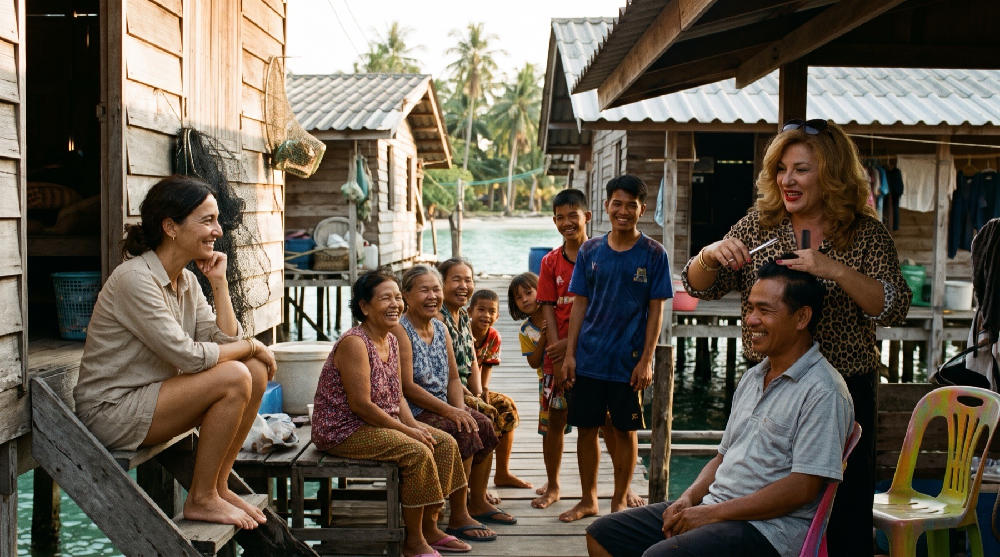

Guion y dirección · Jarmo Lampela
Producción · Buenos Bandidos, Barcelona
Arte conceptual
Largometraje · Comedia dramática · En desarrollo
Buscando a mi hijo surfero
Emma cumple 44 años en San Fernando, cerca de Cádiz. Tiene una pequeña tienda de artesanía, nunca ha estado en Madrid y le dan miedo los aviones, los barcos, los coches y las motos. Entonces un policía joven que creció con su hijo le trae un mensaje del Ministerio de Asuntos Exteriores. Gastón, instructor de buceo y surfista en Tailandia, ha sido condenado en Chiang Rai a 28 años por posesión de drogas. Rechaza toda ayuda. Nadie entiende por qué.
Emma cruza medio mundo con su hermana Glòria, una peluquera a la que le gusta más el karaoke que viajar. Un finlandés que da más problemas que ayuda, la isla equivocada, el dinero perdido en el mar y un viudo amable de Phuket la llevan por fin a una hora a solas con su hijo, y a una pregunta que no esperaba.
Buscando a mi hijo surfero es una película cálida y divertida sobre un tema duro: dos hermanas de viaje, una historia de amor en la madurez y una madre que nunca ha ido a ninguna parte y llega tan lejos como puede.
Largometraje · Comedia dramática · Español, inglés, tailandés · Andalucía / Madrid / Tailandia

Arte conceptual
Emma nunca ha ido a ninguna parte. Ahora tiene que ir.
Arte conceptual
Créditos
Ficha técnica
Largometraje · Comedia dramática
Color
Español, inglés, tailandés
Andalucía / Madrid / Tailandia
Estado
En desarrollo.
Buscamos socios.
Desarrollo y ventas
Buscamos coproductores y financiadores.
Solicitar el dossier